2023 Higher Physics - Paper 2 marking instructions
Source: Scottish Qualifications Authority (SQA) / Qualifications Scotland. This is a StemInteract HTML companion, not an official HTML edition. Selectable text is supplied alongside original page images. Use the images or original PDF for equations, powers, fractions, vector notation, tables and diagrams; text extraction cannot fully preserve mathematical layout.
Jump to a question
PDF page 1
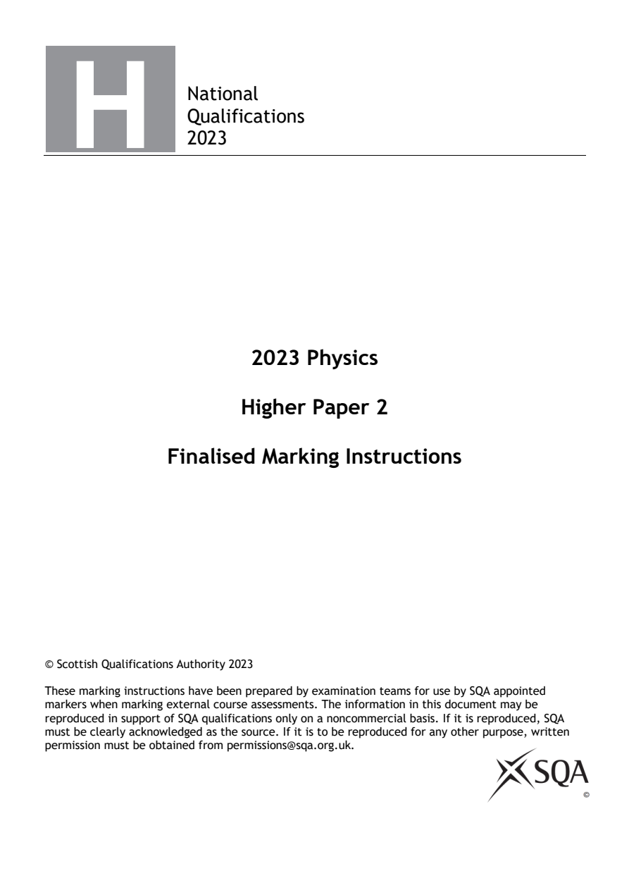
Selectable page text
National
Qualifications
2023
2023 Physics
Higher Paper 2
Finalised Marking Instructions
© Scottish Qualifications Authority 2023
These marking instructions have been prepared by examination teams for use by SQA appointed
markers when marking external course assessments. The information in this document may be
reproduced in support of SQA qualifications only on a noncommercial basis. If it is reproduced, SQA
must be clearly acknowledged as the source. If it is to be reproduced for any other purpose, written
permission must be obtained from permissions@sqa.org.uk.PDF page 2
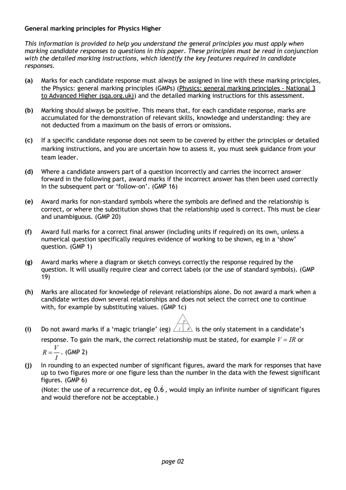
Selectable page text
General marking principles for Physics Higher
This information is provided to help you understand the general principles you must apply when
marking candidate responses to questions in this paper. These principles must be read in conjunction
with the detailed marking instructions, which identify the key features required in candidate
responses.
(a) Marks for each candidate response must always be assigned in line with these marking principles,
the Physics: general marking principles (GMPs) (Physics: general marking principles - National 3
to Advanced Higher (sqa.org.uk)) and the detailed marking instructions for this assessment.
(b) Marking should always be positive. This means that, for each candidate response, marks are
accumulated for the demonstration of relevant skills, knowledge and understanding: they are
not deducted from a maximum on the basis of errors or omissions.
(c) If a specific candidate response does not seem to be covered by either the principles or detailed
marking instructions, and you are uncertain how to assess it, you must seek guidance from your
team leader.
(d) Where a candidate answers part of a question incorrectly and carries the incorrect answer
forward in the following part, award marks if the incorrect answer has then been used correctly
in the subsequent part or ‘follow-on’. (GMP 16)
(e) Award marks for non-standard symbols where the symbols are defined and the relationship is
correct, or where the substitution shows that the relationship used is correct. This must be clear
and unambiguous. (GMP 20)
(f) Award full marks for a correct final answer (including units if required) on its own, unless a
numerical question specifically requires evidence of working to be shown, eg in a ‘show’
question. (GMP 1)
(g) Award marks where a diagram or sketch conveys correctly the response required by the
question. It will usually require clear and correct labels (or the use of standard symbols). (GMP
19)
(h) Marks are allocated for knowledge of relevant relationships alone. Do not award a mark when a
candidate writes down several relationships and does not select the correct one to continue
with, for example by substituting values. (GMP 1c)
(i) Do not award marks if a ‘magic triangle’ (eg) is the only statement in a candidate’s
response. To gain the mark, the correct relationship must be stated, for example V = IR or
V
R= . (GMP 2)
I
(j) In rounding to an expected number of significant figures, award the mark for responses that have
up to two figures more or one figure less than the number in the data with the fewest significant
figures. (GMP 6)
(Note: the use of a recurrence dot, eg 0.6, would imply an infinite number of significant figures
and would therefore not be acceptable.)
page 02PDF page 3
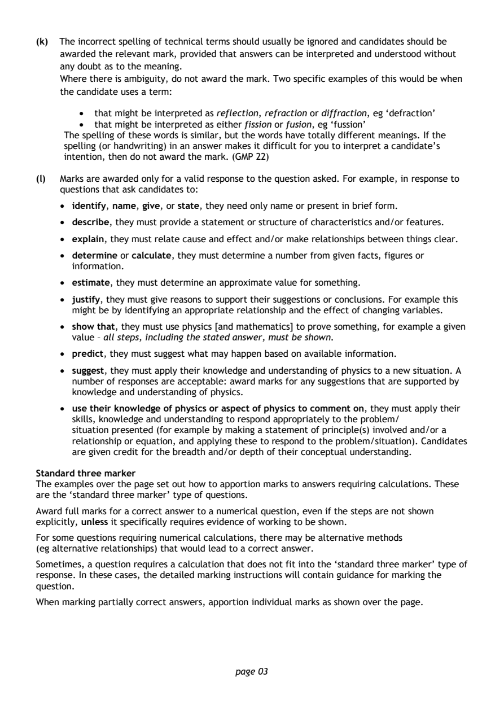
Selectable page text
(k) The incorrect spelling of technical terms should usually be ignored and candidates should be
awarded the relevant mark, provided that answers can be interpreted and understood without
any doubt as to the meaning.
Where there is ambiguity, do not award the mark. Two specific examples of this would be when
the candidate uses a term:
• that might be interpreted as reflection, refraction or diffraction, eg ‘defraction’
• that might be interpreted as either fission or fusion, eg ‘fussion’
The spelling of these words is similar, but the words have totally different meanings. If the
spelling (or handwriting) in an answer makes it difficult for you to interpret a candidate’s
intention, then do not award the mark. (GMP 22)
(l) Marks are awarded only for a valid response to the question asked. For example, in response to
questions that ask candidates to:
• identify, name, give, or state, they need only name or present in brief form.
• describe, they must provide a statement or structure of characteristics and/or features.
• explain, they must relate cause and effect and/or make relationships between things clear.
• determine or calculate, they must determine a number from given facts, figures or
information.
• estimate, they must determine an approximate value for something.
• justify, they must give reasons to support their suggestions or conclusions. For example this
might be by identifying an appropriate relationship and the effect of changing variables.
• show that, they must use physics [and mathematics] to prove something, for example a given
value – all steps, including the stated answer, must be shown.
• predict, they must suggest what may happen based on available information.
• suggest, they must apply their knowledge and understanding of physics to a new situation. A
number of responses are acceptable: award marks for any suggestions that are supported by
knowledge and understanding of physics.
• use their knowledge of physics or aspect of physics to comment on, they must apply their
skills, knowledge and understanding to respond appropriately to the problem/
situation presented (for example by making a statement of principle(s) involved and/or a
relationship or equation, and applying these to respond to the problem/situation). Candidates
are given credit for the breadth and/or depth of their conceptual understanding.
Standard three marker
The examples over the page set out how to apportion marks to answers requiring calculations. These
are the ‘standard three marker’ type of questions.
Award full marks for a correct answer to a numerical question, even if the steps are not shown
explicitly, unless it specifically requires evidence of working to be shown.
For some questions requiring numerical calculations, there may be alternative methods
(eg alternative relationships) that would lead to a correct answer.
Sometimes, a question requires a calculation that does not fit into the ‘standard three marker’ type of
response. In these cases, the detailed marking instructions will contain guidance for marking the
question.
When marking partially correct answers, apportion individual marks as shown over the page.
page 03PDF page 4
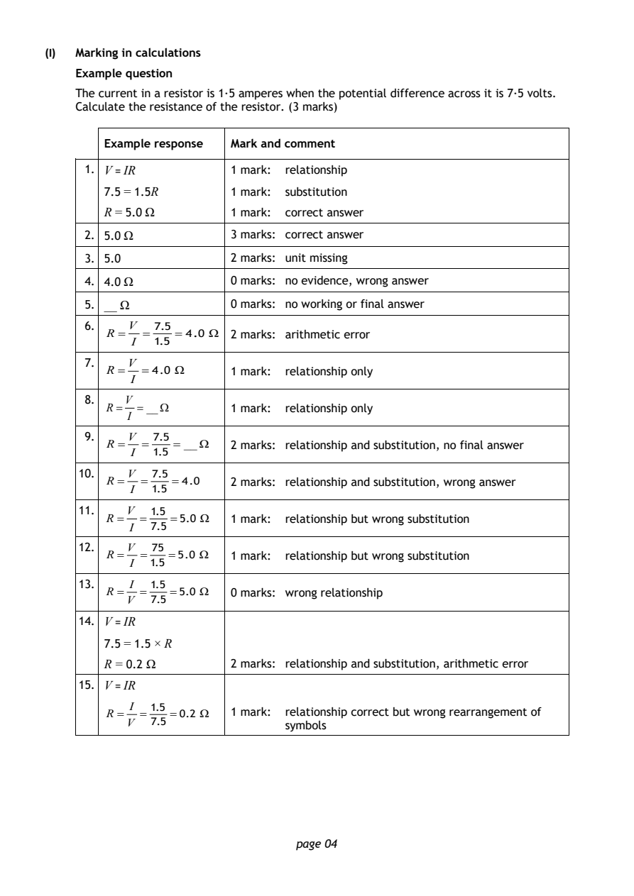
Selectable page text
(l) Marking in calculations
Example question
The current in a resistor is 1·5 amperes when the potential difference across it is 7·5 volts.
Calculate the resistance of the resistor. (3 marks)
Example response Mark and comment
1. V = IR 1 mark: relationship
7.5 = 1.5R 1 mark: substitution
R = 5.0 Ω 1 mark: correct answer
2. 5.0 Ω 3 marks: correct answer
3. 5.0 2 marks: unit missing
4. 4.0 Ω 0 marks: no evidence, wrong answer
5. __ Ω 0 marks: no working or final answer
6. V 7.5
R = = =4.0 Ω 2 marks: arithmetic error
I 1.5
7. V
R = =4.0 Ω 1 mark: relationship only
I
8. V
R= =__Ω 1 mark: relationship only
I
9. V 7.5
R = = = __Ω 2 marks: relationship and substitution, no final answer
I 1.5
10. V 7.5
R= = =4.0 2 marks: relationship and substitution, wrong answer
I 1.5
11. V 1.5
R= = =5.0 Ω 1 mark: relationship but wrong substitution
I 7.5
12. V 75
R= = =5.0 Ω 1 mark: relationship but wrong substitution
I 1.5
13. I 1.5
R= = =5.0 Ω 0 marks: wrong relationship
V 7.5
14. V = IR
7.5 = 1.5 × R
R = 0.2 Ω 2 marks: relationship and substitution, arithmetic error
15. V = IR
I 1.5
R= = =0.2 Ω 1 mark: relationship correct but wrong rearrangement of
V 7.5 symbols
page 04PDF page 5
Paper 2, Question 1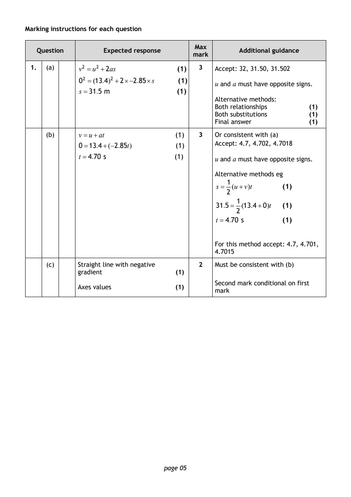
Selectable page text
Marking instructions for each question
Max
Question Expected response Additional guidance
mark
1. (a) v² =u² +2as (1) 3 Accept: 32, 31.50, 31.502
0² =(13.4)² +2×−2.85×s (1)
u and a must have opposite signs.
s =31.5 m (1)
Alternative methods:
Both relationships (1)
Both substitutions (1)
Final answer (1)
(b) v=u+at (1) 3 Or consistent with (a)
0=13.4+(−2.85t) (1) Accept: 4.7, 4.702, 4.7018
t =4.70 s (1)
u and a must have opposite signs.
Alternative methods eg
1
s = (u+v)t (1)
2
1
31.5= (13.4+0)t (1)
2
t =4.70 s (1)
For this method accept: 4.7, 4.701,
4.7015
(c) Straight line with negative 2 Must be consistent with (b)
gradient (1)
Second mark conditional on first
Axes values (1)
mark
page 05PDF page 6
Paper 2, Question 2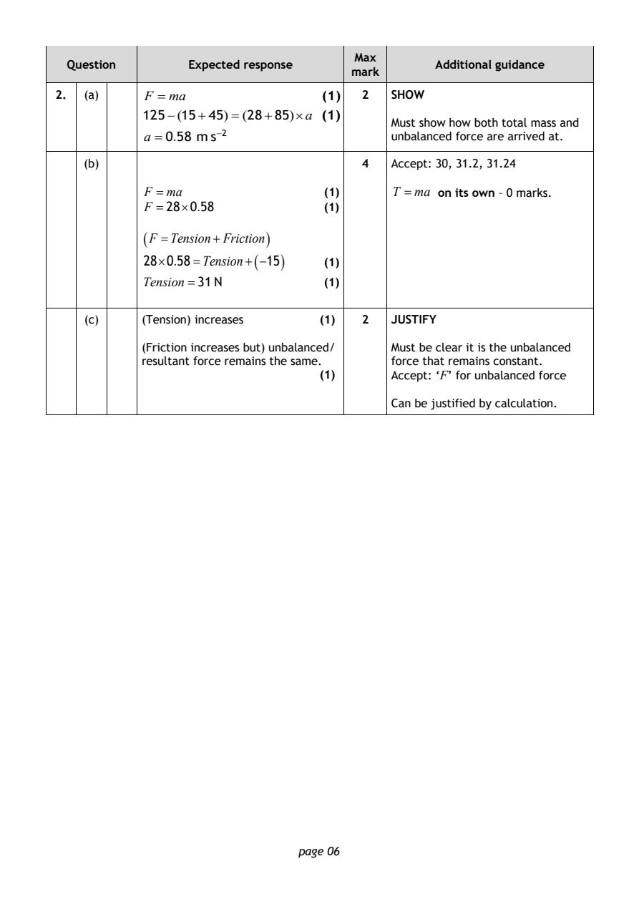
Selectable page text
Max
Question Expected response Additional guidance
mark
2. (a) F = ma (1) 2 SHOW
125−(15+45) =(28+85)×a (1)
Must show how both total mass and
a =0.58 ms⁻² unbalanced force are arrived at.
(b) 4 Accept: 30, 31.2, 31.24
F =ma (1) T =ma on its own – 0 marks.
F =28×0.58 (1)
( F =Tension+Friction )
28×0.58=Tension+(−15)
(1)
Tension=31 N (1)
(c) (Tension) increases (1) 2 JUSTIFY
(Friction increases but) unbalanced/ Must be clear it is the unbalanced
resultant force remains the same. force that remains constant.
(1) Accept: ‘F’ for unbalanced force
Can be justified by calculation.
page 06PDF page 7
Paper 2, Question 3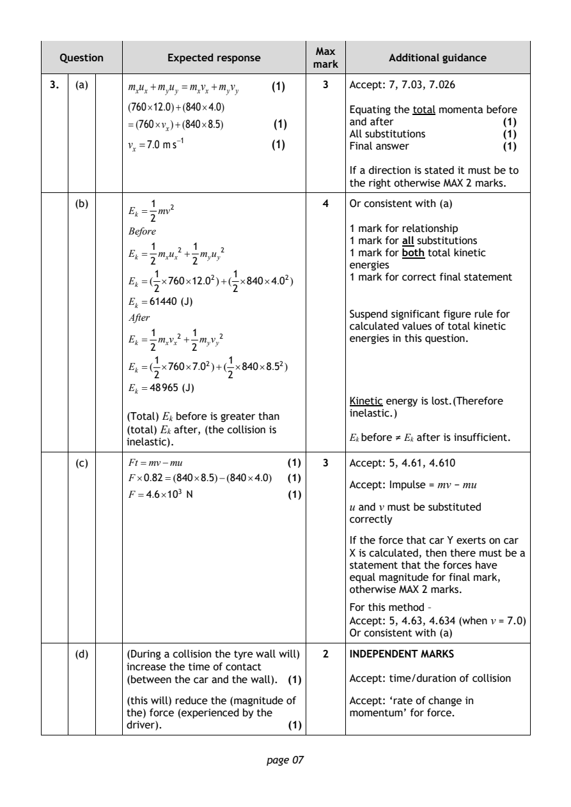
Selectable page text
Max
Question Expected response Additional guidance
mark
3. (a) mₓuₓ +m_{y}u_{y} =mₓvₓ +m_{y}v_{y} (1) 3 Accept: 7, 7.03, 7.026
(760×12.0)+(840×4.0)
Equating the total momenta before
=(760×vₓ)+(840×8.5) (1) and after (1)
All substitutions (1)
vₓ =7.0 ms⁻¹ (1) Final answer (1)
If a direction is stated it must be to
the right otherwise MAX 2 marks.
(b) 1 4 Or consistent with (a)
Eₖ = mv²
2
1 mark for relationship
Before
1 mark for all substitutions
1 1
Eₖ = mₓuₓ²+ m_{y}u_{y}² 1 mark for both total kinetic
2 2
energies
1 1 1 mark for correct final statement
Eₖ =( ×760×12.0²)+( ×840×4.0²)
2 2
Eₖ =61440 (J)
Suspend significant figure rule for
After
calculated values of total kinetic
1 1
Eₖ = mₓvₓ²+ m_{y}v_{y}² energies in this question.
2 2
1 1
Eₖ =( ×760×7.0²)+( ×840×8.5²)
2 2
Eₖ =48965 (J)
Kinetic energy is lost.(Therefore
inelastic.)
(Total) E before is greater than
(total) E^{k} after, (the collision is
E before ≠ E after is insufficient.
inelastic)^{k}. k k
(c) Ft =mv−mu (1) 3 Accept: 5, 4.61, 4.610
F×0.82=(840×8.5)−(840×4.0) (1)
Accept: Impulse = mv − mu
F =4.6×10³ N (1)
u and v must be substituted
correctly
If the force that car Y exerts on car
X is calculated, then there must be a
statement that the forces have
equal magnitude for final mark,
otherwise MAX 2 marks.
For this method –
Accept: 5, 4.63, 4.634 (when v = 7.0)
Or consistent with (a)
(d) (During a collision the tyre wall will) 2 INDEPENDENT MARKS
increase the time of contact
(between the car and the wall). (1) Accept: time/duration of collision
(this will) reduce the (magnitude of Accept: ‘rate of change in
the) force (experienced by the momentum’ for force.
driver). (1)
page 07PDF page 8
Paper 2, Question 4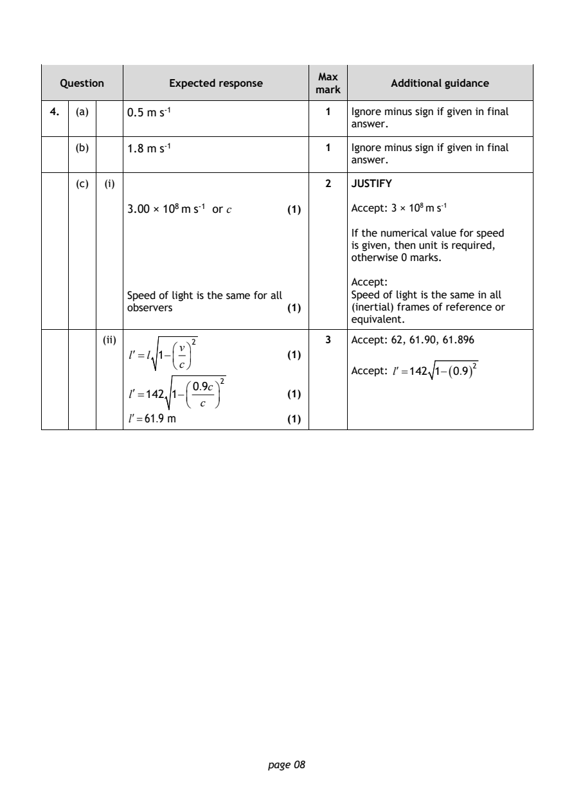
Selectable page text
Max
Question Expected response Additional guidance
mark
4. (a) 0.5 m s⁻¹ 1 Ignore minus sign if given in final
answer.
(b) 1.8 m s⁻¹ 1 Ignore minus sign if given in final
answer.
(c) (i) 2 JUSTIFY
3.00 × 10⁸ m s⁻¹ or c (1) Accept: 3 × 10⁸ m s⁻¹
If the numerical value for speed
is given, then unit is required,
otherwise 0 marks.
Accept:
Speed of light is the same for all Speed of light is the same in all
observers (1) (inertial) frames of reference or
equivalent.
(ii) 3 Accept: 62, 61.90, 61.896
v²
l′=l 1− (1)
c
Accept: l′=142 1−(0.9)²
0.9c²
l′=142 1− (1)
c
l′=61.9 m (1)
page 08PDF page 9
Paper 2, Question 5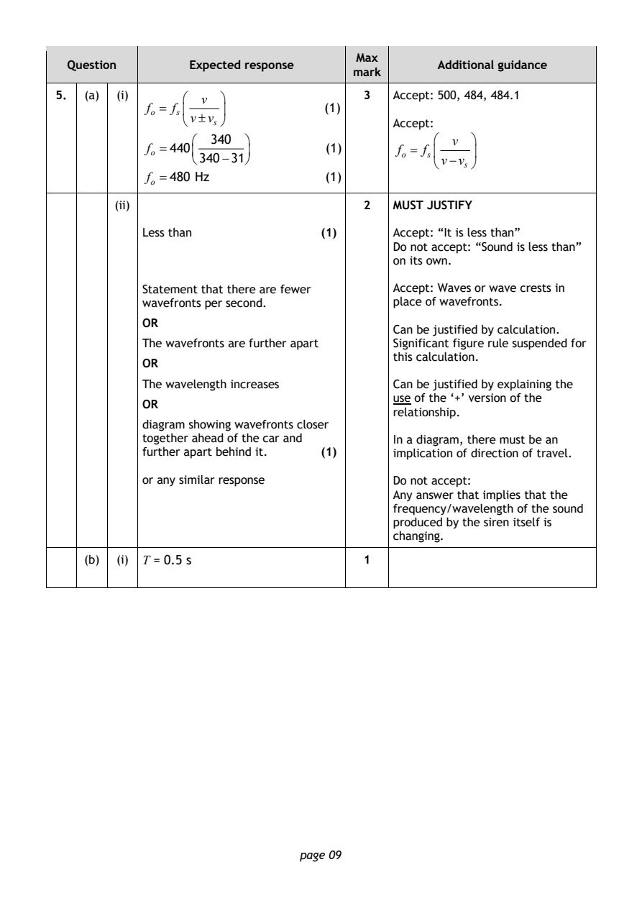
Selectable page text
Max
Question Expected response Additional guidance
mark
5. (a) (i) v 3 Accept: 500, 484, 484.1
fₒ = fₛ (1)
v±vₛ
Accept:
340 v
fₒ =440 (1) fₒ = fₛ
340−31 v−vₛ
fₒ =480 Hz (1)
(ii) 2 MUST JUSTIFY
Less than (1) Accept: “It is less than”
Do not accept: “Sound is less than”
on its own.
Statement that there are fewer Accept: Waves or wave crests in
wavefronts per second. place of wavefronts.
OR
Can be justified by calculation.
The wavefronts are further apart Significant figure rule suspended for
this calculation.
OR
The wavelength increases Can be justified by explaining the
use of the ‘+’ version of the
OR
relationship.
diagram showing wavefronts closer
together ahead of the car and In a diagram, there must be an
further apart behind it. (1) implication of direction of travel.
or any similar response Do not accept:
Any answer that implies that the
frequency/wavelength of the sound
produced by the siren itself is
changing.
(b) (i) T = 0.5 s 1
page 09PDF page 10
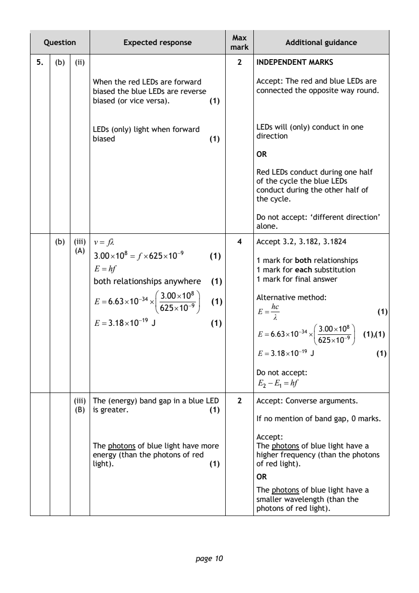
Selectable page text
Max
Question Expected response Additional guidance
mark
5. (b) (ii) 2 INDEPENDENT MARKS
When the red LEDs are forward Accept: The red and blue LEDs are
biased the blue LEDs are reverse connected the opposite way round.
biased (or vice versa). (1)
LEDs will (only) conduct in one
LEDs (only) light when forward
direction
biased (1)
OR
Red LEDs conduct during one half
of the cycle the blue LEDs
conduct during the other half of
the cycle.
Do not accept: ‘different direction’
alone.
(b) (iii) v= fλ 4 Accept 3.2, 3.182, 3.1824
(A)
3.00×10⁸ = f ×625×10⁻⁹ (1)
1 mark for both relationships
E =hf 1 mark for each substitution
both relationships anywhere (1) 1 mark for final answer
3.00×10⁸
Alternative method:
E =6.63×10⁻³⁴× (1)
625×10⁻⁹
E =
hc
(1)
λ
E =3.18×10⁻¹⁹ J (1)
3.00×10⁸
E =6.63×10⁻³⁴× (1),(1)
625×10⁻⁹
E =3.18×10⁻¹⁹ J (1)
Do not accept:
E₂ −E₁=hf
(iii) The (energy) band gap in a blue LED 2 Accept: Converse arguments.
(B) is greater. (1)
If no mention of band gap, 0 marks.
Accept:
The photons of blue light have more The photons of blue light have a
energy (than the photons of red higher frequency (than the photons
light). (1) of red light).
OR
The photons of blue light have a
smaller wavelength (than the
photons of red light).
page 10PDF page 11
Paper 2, Question 6Selectable page text
Max
Question Expected response Additional guidance
mark
6. Award 3 marks where the candidate 3 Candidates may use a variety of
has demonstrated a good physics arguments to answer this
understanding of the physics question.
involved. They show a good Award marks based on candidates
comprehension of the physics of the demonstrating overall good,
situation and provide a logically reasonable, limited, or no
correct answer to the question understanding.
posed. This type of response might
include a statement of the principles
involved, a relationship or an
equation, and the application of
these to respond to the problem.
The answer does not need to be
‘excellent’ or ‘complete’ for the
candidate to gain full marks.
Award 2 marks where the candidate
has demonstrated a reasonable
understanding of the physics
involved. They make some
statement(s) that are relevant to the
situation, showing that they have
understood the problem.
Award 1 mark where the candidate
has demonstrated a limited
understanding of the physics
involved. They make some
statement(s) that are relevant to the
situation, showing that they have
understood at least a little of the
physics within the problem.
Award 0 marks where the candidate
has not demonstrated an
understanding of the physics
involved. There is no evidence that
they have recognised the area of
physics involved, or they have not
given any statement of a relevant
physics principle. Award this mark
also if the candidate merely restates
the physics given in the question.
page 11PDF page 12
Paper 2, Question 7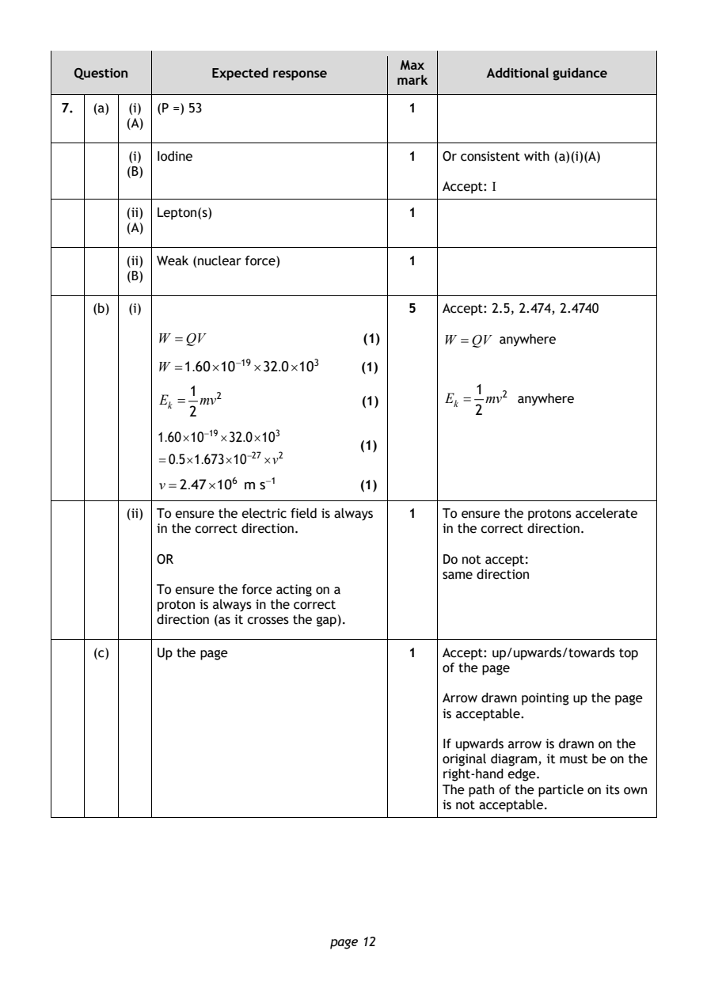
Selectable page text
Max
Question Expected response Additional guidance
mark
7. (a) (i) (P =) 53 1
(A)
(i) Iodine 1 Or consistent with (a)(i)(A)
(B)
Accept: I
(ii) Lepton(s) 1
(A)
(ii) Weak (nuclear force) 1
(B)
(b) (i) 5 Accept: 2.5, 2.474, 2.4740
W =QV (1) W =QV anywhere
W =1.60×10⁻¹⁹×32.0×10³ (1)
1 1
Eₖ = mv² (1) Eₖ = mv² anywhere
2 2
1.60×10⁻¹⁹×32.0×10³
(1)
=0.5×1.673×10⁻²⁷×v²
v=2.47×10⁶ m s⁻¹ (1)
(ii) To ensure the electric field is always 1 To ensure the protons accelerate
in the correct direction. in the correct direction.
OR Do not accept:
same direction
To ensure the force acting on a
proton is always in the correct
direction (as it crosses the gap).
(c) Up the page 1 Accept: up/upwards/towards top
of the page
Arrow drawn pointing up the page
is acceptable.
If upwards arrow is drawn on the
original diagram, it must be on the
right-hand edge.
The path of the particle on its own
is not acceptable.
page 12PDF page 13
Paper 2, Question 8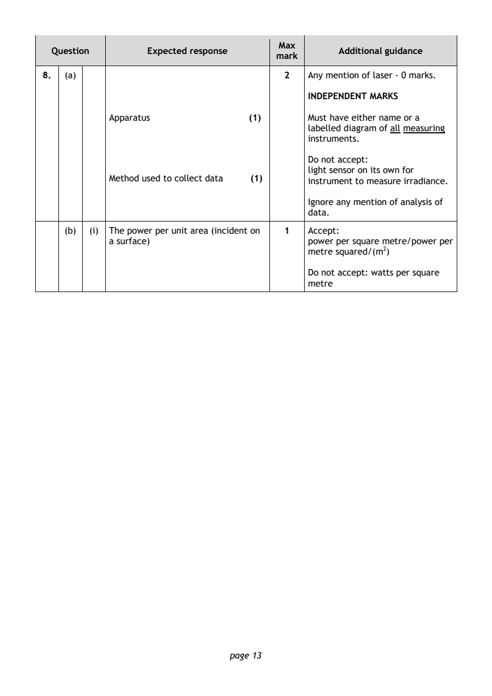
Selectable page text
Max
Question Expected response Additional guidance
mark
8. (a) 2 Any mention of laser - 0 marks.
INDEPENDENT MARKS
Apparatus (1) Must have either name or a
labelled diagram of all measuring
instruments.
Do not accept:
light sensor on its own for
Method used to collect data (1) instrument to measure irradiance.
Ignore any mention of analysis of
data.
(b) (i) The power per unit area (incident on 1 Accept:
a surface) power per square metre/power per
metre squared/(m²)
Do not accept: watts per square
metre
page 13PDF page 14
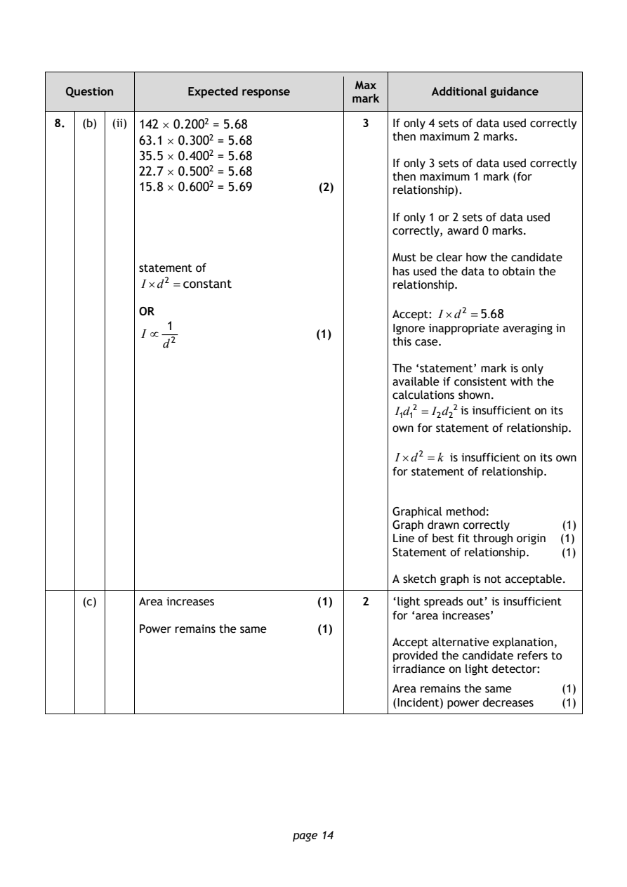
Selectable page text
Max
Question Expected response Additional guidance
mark
8. (b) (ii) 142 × 0.200² = 5.68 3 If only 4 sets of data used correctly
63.1 × 0.300² = 5.68 then maximum 2 marks.
35.5 × 0.400² = 5.68
If only 3 sets of data used correctly
22.7 × 0.500² = 5.68
then maximum 1 mark (for
15.8 × 0.600² = 5.69 (2)
relationship).
If only 1 or 2 sets of data used
correctly, award 0 marks.
Must be clear how the candidate
statement of has used the data to obtain the
I×d² =constant relationship.
OR Accept: I×d² =5.68
1 Ignore inappropriate averaging in
I ∝ (1)
d² this case.
The ‘statement’ mark is only
available if consistent with the
calculations shown.
I₁d₁² = I₂d₂²is insufficient on its
own for statement of relationship.
I×d² =k is insufficient on its own
for statement of relationship.
Graphical method:
Graph drawn correctly (1)
Line of best fit through origin (1)
Statement of relationship. (1)
A sketch graph is not acceptable.
(c) Area increases (1) 2 ‘light spreads out’ is insufficient
for ‘area increases’
Power remains the same (1)
Accept alternative explanation,
provided the candidate refers to
irradiance on light detector:
Area remains the same (1)
(Incident) power decreases (1)
page 14PDF page 15
Paper 2, Question 9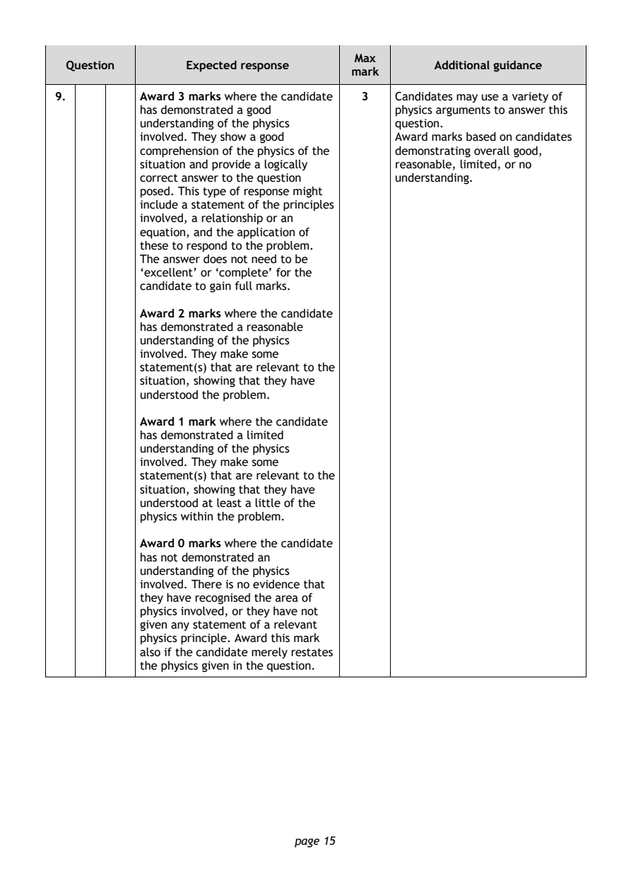
Selectable page text
Max
Question Expected response Additional guidance
mark
9. Award 3 marks where the candidate 3 Candidates may use a variety of
has demonstrated a good physics arguments to answer this
understanding of the physics question.
involved. They show a good Award marks based on candidates
comprehension of the physics of the demonstrating overall good,
situation and provide a logically reasonable, limited, or no
correct answer to the question understanding.
posed. This type of response might
include a statement of the principles
involved, a relationship or an
equation, and the application of
these to respond to the problem.
The answer does not need to be
‘excellent’ or ‘complete’ for the
candidate to gain full marks.
Award 2 marks where the candidate
has demonstrated a reasonable
understanding of the physics
involved. They make some
statement(s) that are relevant to the
situation, showing that they have
understood the problem.
Award 1 mark where the candidate
has demonstrated a limited
understanding of the physics
involved. They make some
statement(s) that are relevant to the
situation, showing that they have
understood at least a little of the
physics within the problem.
Award 0 marks where the candidate
has not demonstrated an
understanding of the physics
involved. There is no evidence that
they have recognised the area of
physics involved, or they have not
given any statement of a relevant
physics principle. Award this mark
also if the candidate merely restates
the physics given in the question.
page 15PDF page 16
Paper 2, Question 10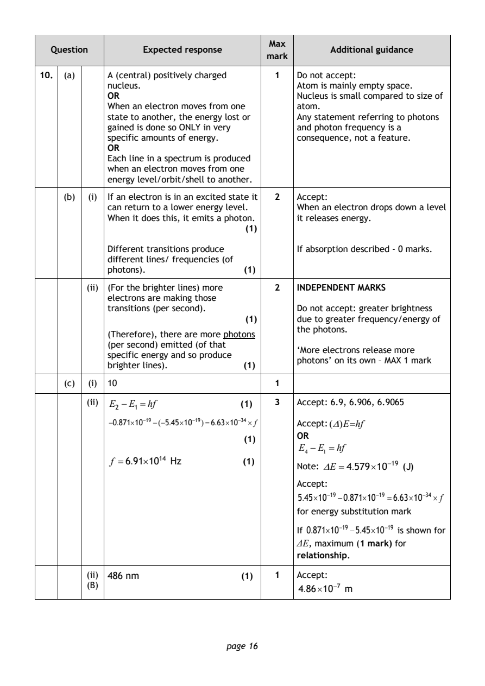
Selectable page text
Max
Question Expected response Additional guidance
mark
10. (a) A (central) positively charged 1 Do not accept:
nucleus. Atom is mainly empty space.
OR Nucleus is small compared to size of
When an electron moves from one atom.
state to another, the energy lost or Any statement referring to photons
gained is done so ONLY in very and photon frequency is a
specific amounts of energy. consequence, not a feature.
OR
Each line in a spectrum is produced
when an electron moves from one
energy level/orbit/shell to another.
(b) (i) If an electron is in an excited state it 2 Accept:
can return to a lower energy level. When an electron drops down a level
When it does this, it emits a photon. it releases energy.
(1)
Different transitions produce If absorption described - 0 marks.
different lines/ frequencies (of
photons). (1)
(ii) (For the brighter lines) more 2 INDEPENDENT MARKS
electrons are making those
transitions (per second). Do not accept: greater brightness
(1) due to greater frequency/energy of
the photons.
(Therefore), there are more photons
(per second) emitted (of that
‘More electrons release more
specific energy and so produce
photons’ on its own – MAX 1 mark
brighter lines). (1)
(c) (i) 10 1
(ii) E₂ −E₁=hf (1) 3 Accept: 6.9, 6.906, 6.9065
−0.871×10⁻¹⁹−(−5.45×10⁻¹⁹)=6.63×10⁻³⁴× f Accept:(∆)E=hf
OR
(1)
E₄ −E₁ =hf
f =6.91×10¹⁴ Hz (1)
Note: ∆E =4.579×10⁻¹⁹ (J)
Accept:
5.45×10⁻¹⁹−0.871×10⁻¹⁹ =6.63×10⁻³⁴× f
for energy substitution mark
If 0.871×10⁻¹⁹−5.45×10⁻¹⁹ is shown for
ΔE, maximum (1 mark) for
relationship.
(ii) 486 nm (1) 1 Accept:
(B)
4.86×10⁻⁷ m
page 16PDF page 17
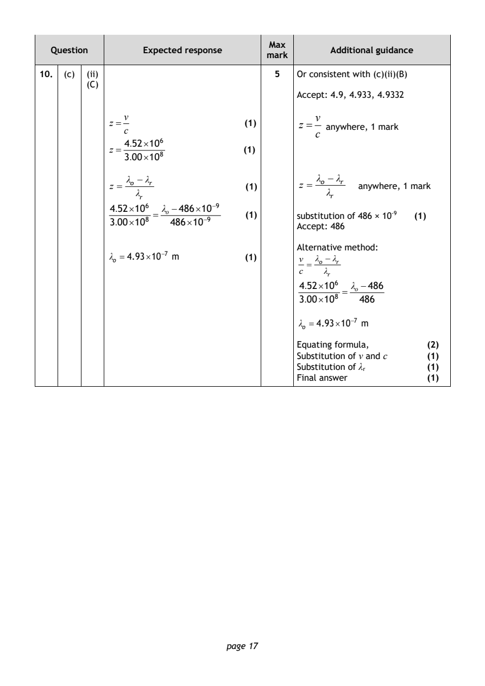
Selectable page text
Max
Question Expected response Additional guidance
mark
10. (c) (ii) 5 Or consistent with (c)(ii)(B)
(C)
Accept: 4.9, 4.933, 4.9332
v v
z = (1) z =
where, 1 mark
c c ^{a}ⁿ^{y}
4.52×10⁶
z = (1)
3.00×10⁸
λₒ − λᵣ λₒ − λᵣ
z = (1) z = anywhere, 1 mark
λᵣ λᵣ
4.52×10⁶ λₒ −486×10⁻⁹
= (1) substitution of 486 × 10⁻⁹ (1)
3.00×10⁸ 486×10⁻⁹
Accept: 486
Alternative method:
λₒ = 4.93×10⁻⁷ m (1) v λₒ − λᵣ
=
c λᵣ
4.52×10⁶ λₒ −486
=
3.00×10⁸ 486
λₒ = 4.93×10⁻⁷ m
Equating formula, (2)
Substitution of v and c (1)
Substitution of λ (1)
r
Final answer (1)
page 17PDF page 18
Paper 2, Question 11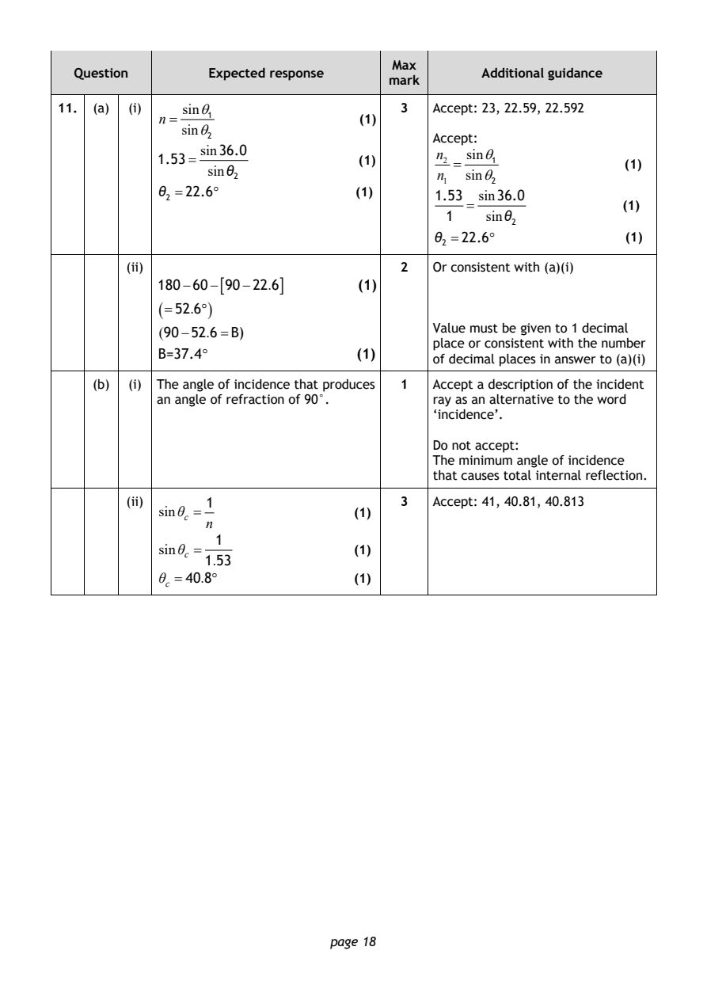
Selectable page text
Max
Question Expected response Additional guidance
mark
11. (a) (i) sinθ₁ 3 Accept: 23, 22.59, 22.592
n= (1)
sinθ
Accept:
1.53=
si²n36.0
(1) n₂ = sinθ₁ (1)
sinθ₂
n₁ sinθ
θ₂ =22.6° (1) 1.53 sin²36.0
= (1)
1 sinθ₂
θ₂ =22.6° (1)
(ii) 2 Or consistent with (a)(i)
180−60−[90−22.6]
(1)
(=52.6°)
(90−52.6=B) Value must be given to 1 decimal
place or consistent with the number
B=37.4° (1)
of decimal places in answer to (a)(i)
(b) (i) The angle of incidence that produces 1 Accept a description of the incident
an angle of refraction of 90°. ray as an alternative to the word
‘incidence’.
Do not accept:
The minimum angle of incidence
that causes total internal reflection.
(ii) 1 3 Accept: 41, 40.81, 40.813
sinθ_{c} = (1)
n
1
sinθ_{c} = (1)
1.53
θ_{c} =40.8° (1)
page 18PDF page 19
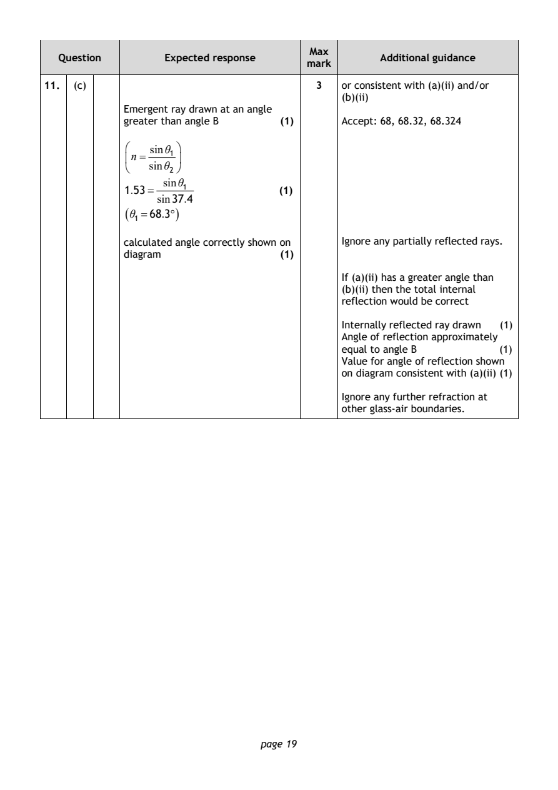
Selectable page text
Max
Question Expected response Additional guidance
mark
11. (c) 3 or consistent with (a)(ii) and/or
(b)(ii)
Emergent ray drawn at an angle
greater than angle B (1) Accept: 68, 68.32, 68.324
sinθ₁
n=
sinθ₂
sinθ₁
1.53= (1)
sin37.4
( θ₁=68.3°)
calculated angle correctly shown on Ignore any partially reflected rays.
diagram (1)
If (a)(ii) has a greater angle than
(b)(ii) then the total internal
reflection would be correct
Internally reflected ray drawn (1)
Angle of reflection approximately
equal to angle B (1)
Value for angle of reflection shown
on diagram consistent with (a)(ii) (1)
Ignore any further refraction at
other glass-air boundaries.
page 19PDF page 20
Paper 2, Question 12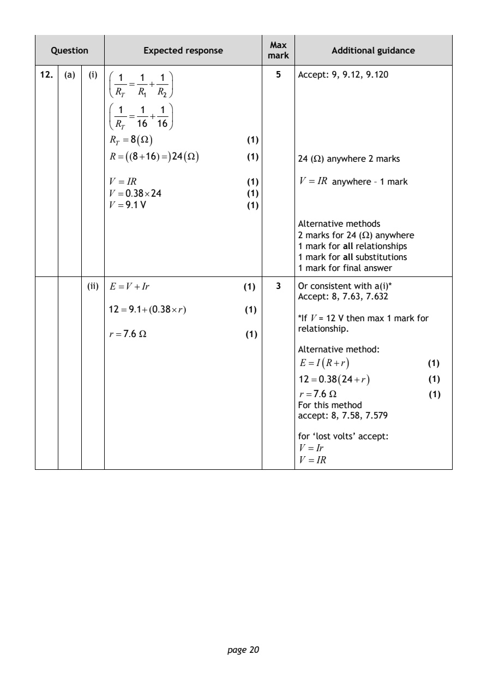
Selectable page text
Max
Question Expected response Additional guidance
mark
12. (a) (i) 1 1 1 5 Accept: 9, 9.12, 9.120
= +
R_{T} R₁ R₂
1 1 1
= +
R_{T} 16 16
R_{T}
=8(
Ω
)
(1)
R=( (8+16)=)24(
Ω
)
(1) 24 (Ω) anywhere 2 marks
V = IR (1) V = IR anywhere – 1 mark
V =0.38×24 (1)
V =9.1 V (1)
Alternative methods
2 marks for 24 (Ω) anywhere
1 mark for all relationships
1 mark for all substitutions
1 mark for final answer
(ii) E =V +Ir (1) 3 Or consistent with a(i)*
Accept: 8, 7.63, 7.632
12=9.1+(0.38×r) (1)
*If V = 12 V then max 1 mark for
relationship.
r =7.6Ω (1)
Alternative method:
E = I ( R+r ) (1)
12=0.38(24+r ) (1)
r =7.6Ω (1)
For this method
accept: 8, 7.58, 7.579
for ‘lost volts’ accept:
V = Ir
V = IR
page 20PDF page 21
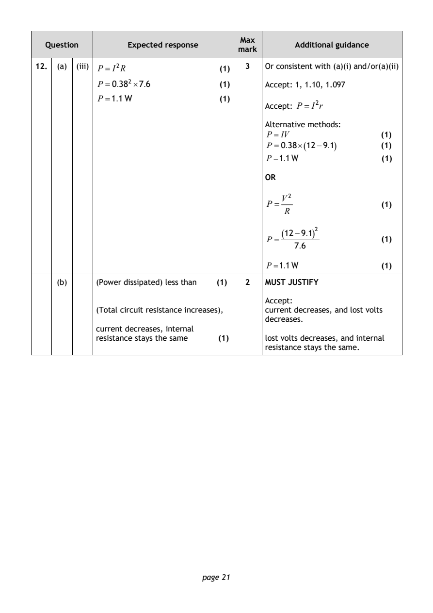
Selectable page text
Max
Question Expected response Additional guidance
mark
12. (a) (iii) P= I²R (1) 3 Or consistent with (a)(i) and/or(a)(ii)
P =0.38²×7.6 (1) Accept: 1, 1.10, 1.097
P =1.1 W (1)
Accept: P = I²r
Alternative methods:
P= IV (1)
P=0.38×(12−9.1) (1)
P=1.1 W (1)
OR
V²
P = (1)
R
(12−9.1)²
P= (1)
7.6
P=1.1 W (1)
(b) (Power dissipated) less than (1) 2 MUST JUSTIFY
Accept:
(Total circuit resistance increases), current decreases, and lost volts
decreases.
current decreases, internal
resistance stays the same (1) lost volts decreases, and internal
resistance stays the same.
page 21PDF page 22
Paper 2, Question 13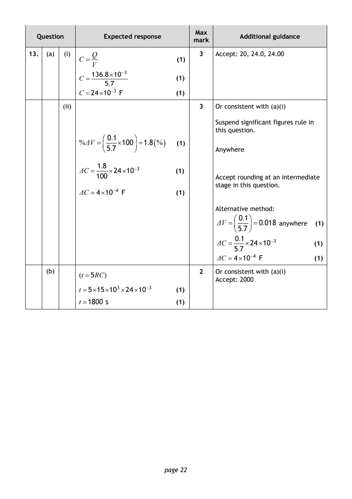
Selectable page text
Max
Question Expected response Additional guidance
mark
13. (a) (i) Q 3 Accept: 20, 24.0, 24.00
C = (1)
V
136.8×10⁻³
C = (1)
5.7
C =24×10⁻³ F (1)
(ii) 3 Or consistent with (a)(i)
Suspend significant figures rule in
this question.
0.1
%ΔV = ×100 =1.8( % ) (1)
5.7 Anywhere
1.8
ΔC = ×24×10⁻³ (1)
100 Accept rounding at an intermediate
stage in this question.
ΔC =4×10⁻⁴ F (1)
Alternative method:
0.1
ΔV = =0.018 anywhere (1)
5.7
0.1
ΔC = ×24×10⁻³ (1)
5.7
ΔC =4×10⁻⁴ F (1)
(b) 2 Or consistent with (a)(i)
(t =5RC)
Accept: 2000
t =5×15×10³×24×10⁻³ (1)
t =1800 s (1)
page 22PDF page 23
Paper 2, Question 14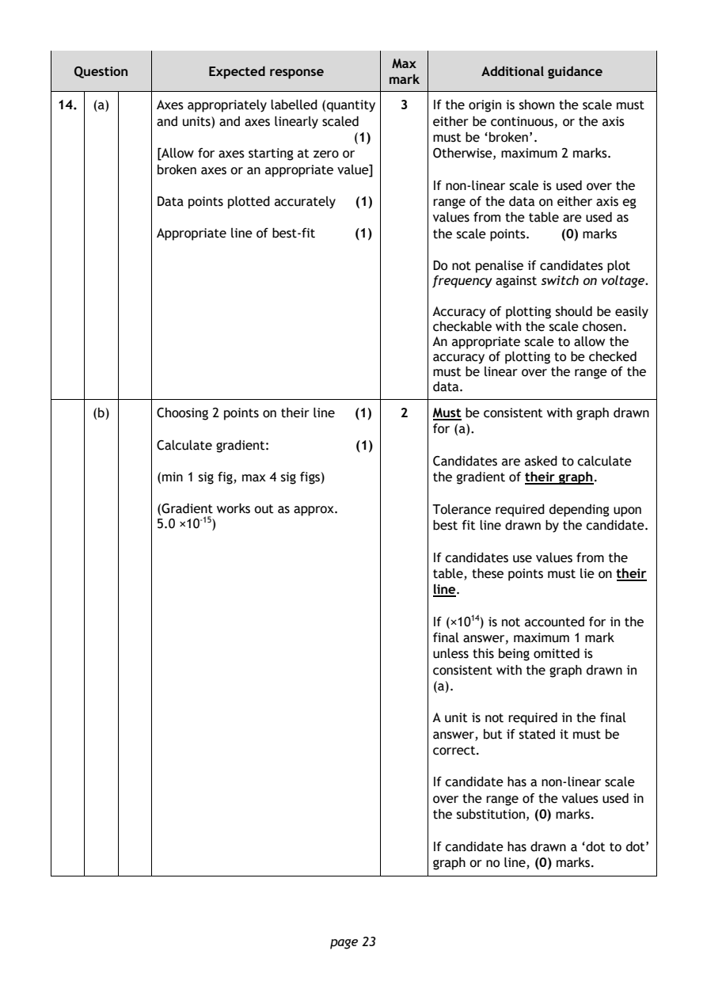
Selectable page text
Max
Question Expected response Additional guidance
mark
14. (a) Axes appropriately labelled (quantity 3 If the origin is shown the scale must
and units) and axes linearly scaled either be continuous, or the axis
(1) must be ‘broken’.
[Allow for axes starting at zero or Otherwise, maximum 2 marks.
broken axes or an appropriate value]
If non-linear scale is used over the
Data points plotted accurately (1) range of the data on either axis eg
values from the table are used as
Appropriate line of best-fit (1) the scale points. (0) marks
Do not penalise if candidates plot
frequency against switch on voltage.
Accuracy of plotting should be easily
checkable with the scale chosen.
An appropriate scale to allow the
accuracy of plotting to be checked
must be linear over the range of the
data.
(b) Choosing 2 points on their line (1) 2 Must be consistent with graph drawn
for (a).
Calculate gradient: (1)
Candidates are asked to calculate
(min 1 sig fig, max 4 sig figs) the gradient of their graph.
(Gradient works out as approx. Tolerance required depending upon
5.0 ×10⁻¹⁵) best fit line drawn by the candidate.
If candidates use values from the
table, these points must lie on their
line.
If (×10¹⁴) is not accounted for in the
final answer, maximum 1 mark
unless this being omitted is
consistent with the graph drawn in
(a).
A unit is not required in the final
answer, but if stated it must be
correct.
If candidate has a non-linear scale
over the range of the values used in
the substitution, (0) marks.
If candidate has drawn a ‘dot to dot’
graph or no line, (0) marks.
page 23PDF page 24
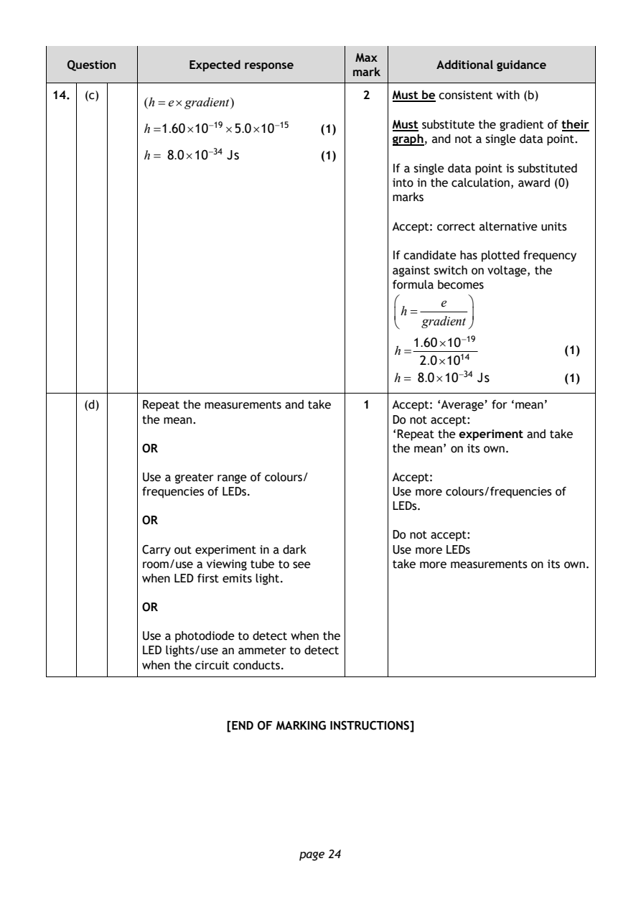
Selectable page text
Max
Question Expected response Additional guidance
mark
14. (c) 2 Must be consistent with (b)
(h=e×gradient)
h=1.60×10⁻¹⁹×5.0×10⁻¹⁵ (1) Must substitute the gradient of their
graph, and not a single data point.
h= 8.0×10⁻³⁴ Js (1)
If a single data point is substituted
into in the calculation, award (0)
marks
Accept: correct alternative units
If candidate has plotted frequency
against switch on voltage, the
formula becomes
e
h=
gradient
1.60×10⁻¹⁹
h= (1)
2.0×10¹⁴
h= 8.0×10⁻³⁴ Js (1)
(d) Repeat the measurements and take 1 Accept: ‘Average’ for ‘mean’
the mean. Do not accept:
‘Repeat the experiment and take
OR the mean’ on its own.
Use a greater range of colours/ Accept:
frequencies of LEDs. Use more colours/frequencies of
LEDs.
OR
Do not accept:
Carry out experiment in a dark Use more LEDs
room/use a viewing tube to see take more measurements on its own.
when LED first emits light.
OR
Use a photodiode to detect when the
LED lights/use an ammeter to detect
when the circuit conducts.
[END OF MARKING INSTRUCTIONS]
page 24